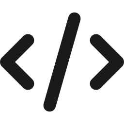
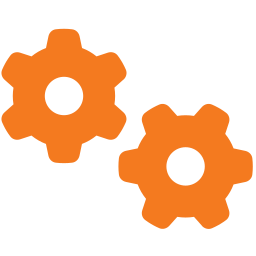

LUG 액티비티 · ENGINEERING ARTIST
공학 아티스트
Special Class



“
우리는 우리의
문화를 만들어갑니다
CONCEPT
LUG란?
Limber Up Engineering
•LUG는 Limber Up Engineering의 줄임말입니다.
•Limber Up : "몸을 풀다, 유연하고 부드럽게 하다“라는 뜻입니다.
•LUG 액티비티 : 공학자로서 의미를 표현하고, 전달하는 방법을 익히기 위해 시작하는 첫 단계 (=워밍업)

핵심 한 줄)
LUG = Limber Up Engineering
정의
LUG : Limber Up Engineering
의미
몸을 풀다, 유연하고 부드럽게 하다
목적
표현·전달 방법을 익히는 첫 단계
01
SECTION
LUG 액티비티 – 시리얼 통신

ACTIVITY
LUG 액티비티 - 시리얼 통신
수신 역할 (받는 사람)
•눈을 가리고, 손만 사용 가능
•송신 역할의 지시에 대한 행동만 수행
•오직 파트너의 말에 의지해 움직이기
송신 역할 (보내는 사람)
•손은 못 쓰고, 말로만 설명 가능
07


•순서대로 명확하게 지시 전달하기
•수신 역할의 기준에서 알아듣기 좋게 전달하기
점퍼 와이어끼리 연결하기 (5개)
빵판에 점퍼 와이어 5개씩 꽂기
(수신 역할 2명이 각각 하나씩)
종이컵에 고무줄 3개 끼우기
나무 막대 3개 종이테이프로 이어붙이기
REFLECT
오늘의 활동 돌아보기

좋았던 점
•오늘의 LUG 액티비티를 하면서 좋았던 점을 이야기해 봅시다.
개선점
•더 나아질 수 있는 점을 이야기해 봅시다.
10
어려웠던 점
•LUG 액티비티를 하며 어떤 점이 어려웠나요?
•협업할 땐 또 어떤 점이 어려웠나요?
감사합니다
프로젝트 공학 아티스트